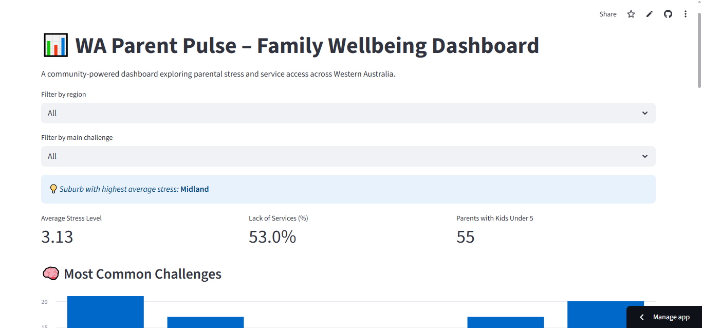

My Projects
👩👧 WA Parent Pulse – Family Wellbeing Dashboard

A data-driven interactive dashboard built with Python, Pandas, Folium, Streamlit to explore parental stress and service access across Western Australia.
Features live map visualisation, regional filters, key stats, and community-driven insights for policy, social work, and tech for good.
[Live Demo]
View on GitHub
🔗 URL Shortener (Go + BoltDB)
A simple web app that shortens long URLs. Built using Go, BoltDB, and basic HTML/CSS. View on GitHub
🌤️ Weather Dashboard Web App
A real-time weather dashboard that allows users to search for any city and view live weather information including temperature, humidity, and weather conditions View on GitHub
Recipe Blog
A simple full-stack recipe web app built with HTML, CSS, JavaScript, Node.js, Express, and MongoDB. Users can view and submit recipes, which are stored in a cloud database. The project is deployed with Netlify (frontend) and Render (backend). [Live Demo] View on GitHub
🛡️ Zero Click URL Detector (Chrome Extension + AI)
A security-focused Chrome extension that detects phishing and malicious URLs in real time using a Flask backend and a custom-trained machine learning model.
Technologies used: JavaScript, Flask, Python, scikit-learn, Chrome Extension APIs.
Features AI-powered threat detection, safe/malicious labeling, and full-stack integration.
View on GitHub